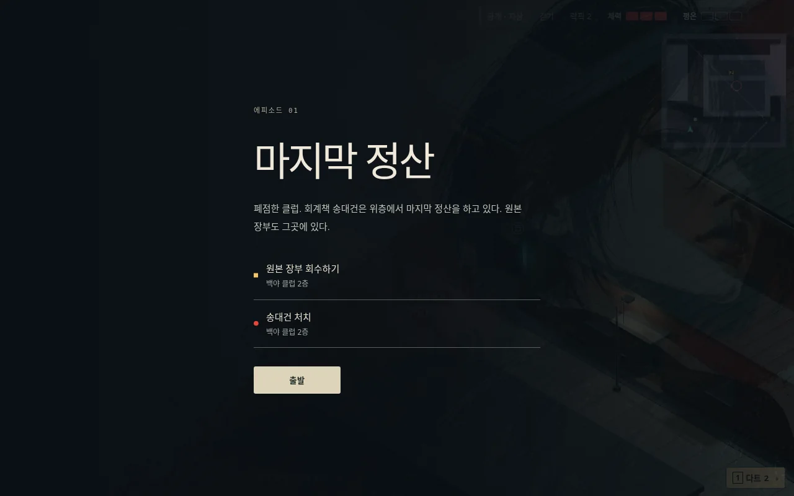
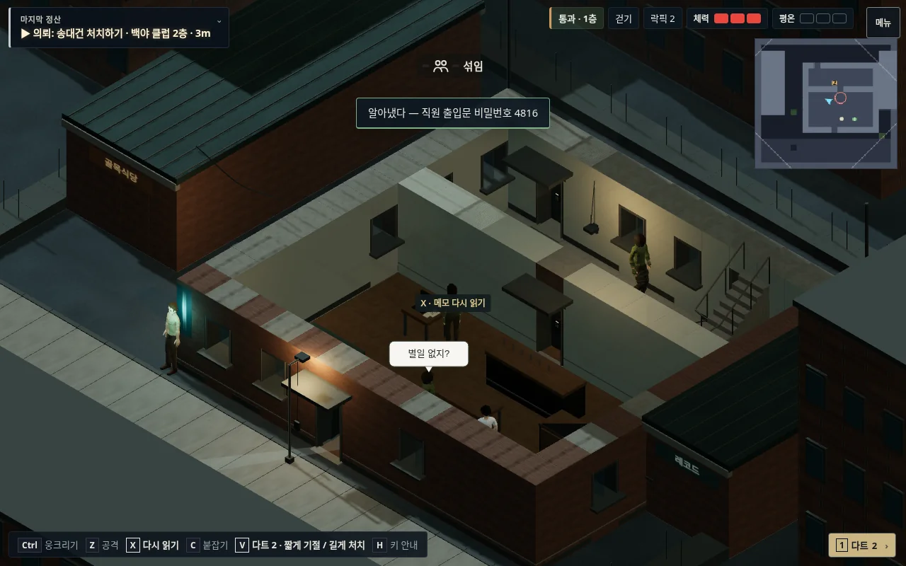
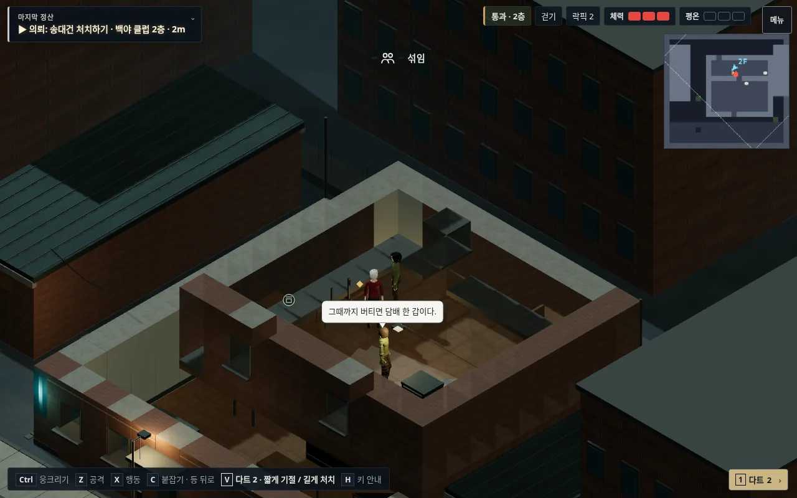
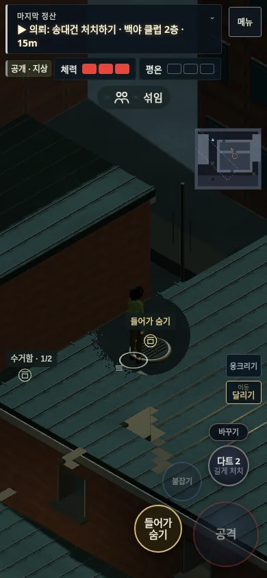
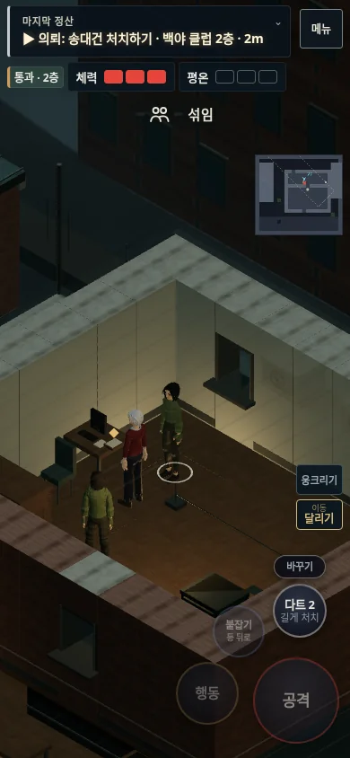
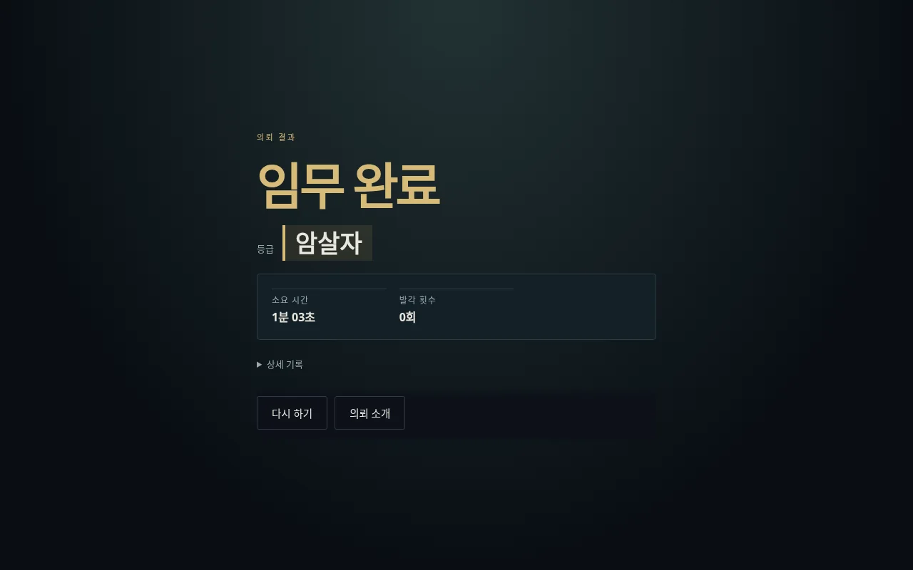

야행 · 에피소드 01
마지막 정산
폐점한 클럽. 송대건을 처치하고 원본 장부를 회수한 뒤 빠져나간다.

소개는 한 문단, 목표는 두 개. 접근 순서는 정해져 있지 않다.
책상에서 얻는 비밀번호. 직원 출입문을 열거나 다른 진입로를 찾는다.
표적은 책상과 창가를 오가고 순찰이 같은 공간을 지난다.
맨홀로 골목을 우회한다.
열린 창문으로 정산실에 들어간다.
PC·모바일 완주, 기절/처치 구분, 재시작과 소개 화면 복귀를 검사했다. 완주 검사는 시뮬레이션 시간을 빠르게 진행하며 실제 휴대폰 FPS나 신규 플레이 분량의 측정이 아니다.